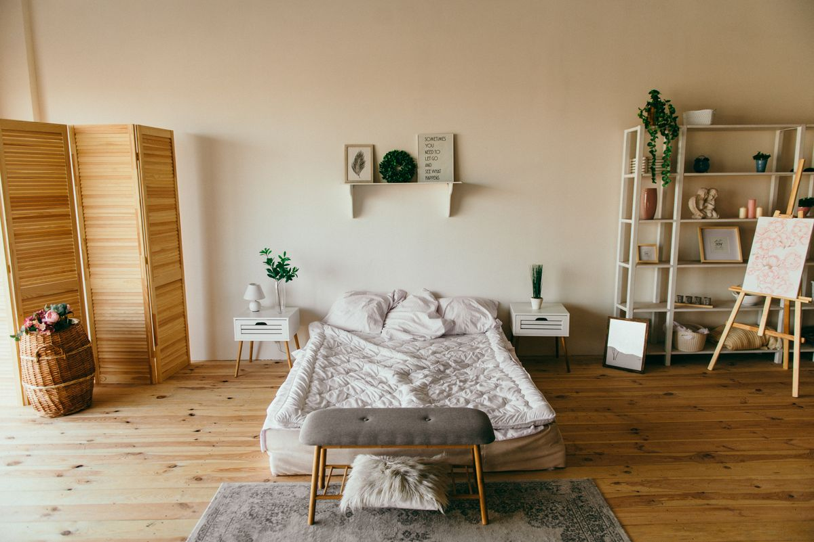

How to Get Interior Design Clients Online (Without Chasing Every Lead)

Your portfolio is stunning. Your finishes are impeccable. So why does the phone stay quiet while less talented studios stay booked? Almost always the same answer: clients cannot find you, and when they do, nothing tells them what working with you actually delivers. Here is how to get interior design clients online, in the order I would do it if I were starting your studio today.
Key takeaways:
- Clients hire proof, not promises, so a documented portfolio comes before any promotion.
- Instagram is the shop window, your website is what closes the inquiry.
- Before and after content is the single highest converting format for designers.
- Small, consistent Meta Ads budgets beat one big untested launch.
- Most studios lose clients to silence, because slow replies kill warm inquiries.
Build proof before promotion
Design clients are buying an outcome they cannot see until it is done, so they look for evidence. If your portfolio is scattered across a phone gallery and an old Instagram grid, every marketing effort downstream will underperform.
Start by documenting three to six projects properly, even small ones. Each project needs a short story: what the space was before, what the client needed, what you changed, what it cost roughly, and how long it took. Photos before and after, ideally shot from the same angle and light. This single asset converts better than any ad spend, because it answers the questions a serious client is already asking.
No paid campaign can compensate for a thin portfolio. Fix proof first.
Instagram for interior designers: the shop window
Instagram is where design clients browse, so treat it like a magazine, not a bulletin board. A few principles that consistently work:
- Before and after reels. The transformation hook stops the scroll like nothing else in this niche.
- Process content. A 30 second clip of a moodboard becoming a room builds trust in your thinking.
- Budget honesty. Posts that explain what a certain budget realistically gets you attract serious clients and filter out tire kickers.
- Consistency over bursts. Two or three solid posts a week for a year beats daily posting for a month and then silence.
Write captions for the client you want, not for other designers. The reader is a homeowner in DHA or a restaurant owner in Dubai, not your peers.
Your website: where inquiries actually convert
Instagram profiles are a terrible place to make a decision. There is no clear services page, no inquiry form, no way to compare projects. Every serious buyer eventually lands on a website, and if yours is slow, dated or missing, that is where the inquiry dies.
A designer website needs very little: a portfolio organized by project type, whether residential, commercial or hospitality, a plain explanation of how you work, real testimonials with real names if you can get them, and one short inquiry form. That is the machine. I build portfolio sites for design brands around exactly this structure.
There is also a slower, compounding benefit: a properly built site starts ranking for searches like interior designer Karachi or interior design company Dubai, and those searchers have intent that a scroller never does.
If you want a second opinion on why your site or profile is not converting, message me on WhatsApp with your links. I will look and tell you honestly what I would change first.
Local search: the slow channel that compounds
While ads buy data and Instagram builds desire, local search quietly accumulates. Someone typing interior designer for apartment in DHA Karachi or office fit out company Dubai is not browsing, they are shopping. Winning those searches takes months, not days, but the traffic is the highest intent you will ever get and it does not stop when the budget stops.
The practical basics are unglamorous and effective. One page per service area and city you serve. Project pages with real descriptions instead of image dumps. Consistent business details everywhere your studio is listed. A handful of genuine reviews. That is most of what local search rewards, and most studios never do it.
I cover the full process in the interior design digital marketing guide, and if you want it handled properly, this is my SEO service.
Run small, honest ads
Organic reach is a long game, and ads are how you buy data while it builds. For interior design studios, Meta Ads almost always beat Google Ads early, because design purchases start with desire, not a search query.
- Start with Rs1,000 to Rs2,000 per day. Enough to learn, not enough to hurt.
- Run two or three creative angles: a before and after reel, a budget explainer, a project story.
- Send traffic to a single project page or inquiry form, never to a homepage.
- Measure cost per qualified inquiry, not likes or followers.
- Give it two to three weeks before judging, then scale what worked.
In campaigns I have run, messaging conversations on modest daily budgets came in at roughly Rs25 each. Design inquiries usually cost more than that because the ticket is higher, but the mechanics of testing creative honestly do not change.
Common mistakes interior designers make with online marketing
- Portfolio with no story. Pretty photos with no context, budget or outcome give buyers nothing to decide on.
- Hiding the process and price range. Vagueness attracts browsers. Ranges attract serious clients.
- No website. Relying entirely on Instagram means renting your entire pipeline from an algorithm.
- Slow replies. An inquiry answered two days later is usually already someone else's client. This is the cheapest problem to fix and the most common.
- Copying competitors. Studios that sound like every other studio force clients to choose on price alone.
Frequently Asked Questions
How do interior designers get their first clients?
Start with the networks you already have, friends, family, past colleagues, and offer a small paid project or two to build portfolio photos. Pair that with a simple portfolio website and an Instagram presence that documents real work. First clients come from trust, and trust comes from visible proof.
Is Instagram enough to get interior design clients?
Instagram is the strongest single channel for designers because the work is visual, but it works best as the shop window rather than the whole shop. Pair it with a portfolio website that converts visitors into inquiries and ranks for local searches. Instagram brings attention, the website closes it.
How much should interior designers spend on ads?
Most designers can test Meta Ads properly with Rs1,000 to Rs2,000 per day for two to three weeks. That is enough to test several creative angles and see a realistic cost per inquiry before committing more.
Do interior designers need a website or just Instagram?
A website. Serious clients search beyond social profiles before making contact, and a fast portfolio site with project pages and an inquiry form converts visitors that Instagram alone cannot. It can also rank in local Google searches for years.
What content should interior designers post?
Before and after transformations, honest project walkthroughs, budget breakdowns and design decisions explained in plain language. Content that shows your thinking attracts clients who value it, not just followers who like pictures.
OpenAgent exists for exactly this niche. If you want the full machine, portfolio site, Instagram strategy and ads that bring qualified design inquiries, see how I run campaigns or contact me here and tell me about your studio. I will tell you plainly what to fix first.